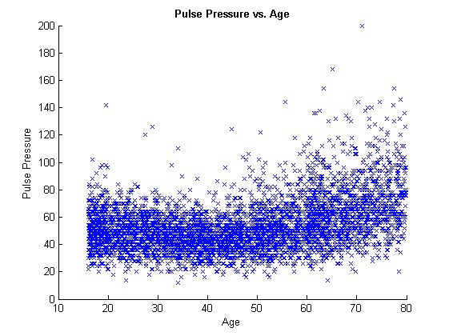
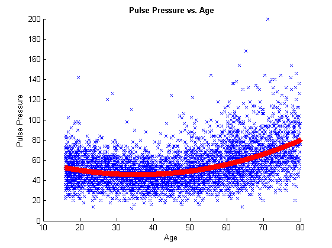
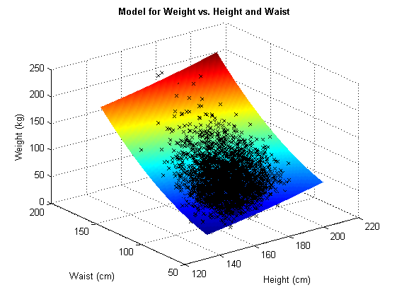

Chapter 02 - Algorithm Design in MATLAB.
Author: Ken Deeley, ken.deeley@mathworks.co.uk
This chapter provides the necessary programming techniques for algorithm design and development using MATLAB. The idea is that we are now happy writing scripts to organise and collect sequences of MATLAB commands, but these become increasingly difficult to manage as the complexity of our algorithms grows. Moreover, a common requirement is to run scripts repeatedly using different values for certain parameters within the script. Functions are a more effective programming construct for managing these issues. In this chapter we will learn how to develop and structure an algorithm for performing simple preprocessing, model fitting and visualisation. The important concept here is how to modularise code so that it becomes reusable, maintainable, flexible and robust.
Outline:
- Formulating an algorithm for 1D model fitting
- Linear regression models
- Visualising the results
- Generalising the algorithm to 2D model fitting
- Anonymous function handles
- Surface plots
- Code modularisation: from scripts to functions
- Local functions
- Nested functions
- Code robustness and flexibility
- Parsing user-supplied input arguments
- Defining flexible interfaces
- Errors and error identifiers
Reference files for this chapter:
- ../Reference/S02_Algorithm.m
- ../Reference/F02_fitQuadModel.m
- ../Reference/S02_MedData.mat
Contents
- Linear Regression Models.
- Matrix Equations.
- Slash and Backslash.
- Matrix and Array Operators.
- Generalising the Model.
- Function Handles.
- Creating Equally-Spaced Vectors.
- Making Grids.
- Surface Plots.
- Creating a Function.
- Workspaces.
- Local Functions.
- Defining Flexible Interfaces.
- Checking Input Arguments.
- Errors and Error Identifiers.
Linear Regression Models.
The main example in this chapter is developing an algorithm to perform data preprocessing, fitting and visualisation. We will use a linear regression model with variables chosen from the biomedical data discussed in the first chapter of the course. The examples are fairly simple, but if attendees are unfamiliar with regression, the concepts can be explained in terms of inputs and outputs. For example, we have an input variable (e.g. Age) and we would like to model the dependency of an output variable (e.g. PulsePressure) on the input. It's easier to gather the commands in these sections into a single script, which can then be run section by section and then eventually converted into a properly structured function by the end of the chapter.
% Visualise the dependency of pulse pressure on age. load('S02_MedData.mat') x = MedData.Age; y = MedData.BPDiff; figure scatter(x, y, 'bx') xlabel('Age') ylabel('Pulse Pressure') title('\bfPulse Pressure vs. Age') % This dependency looks as if it could be modelled using a quadratic curve % (i.e. using a model of the form PP ~ C0 + C1*Age + C2*Age.^2, where the % coefficients C0, C1 and C2 are unknown and to be determined).
Matrix Equations.
Formulating a linear regression model leads to a system of linear equations A*x = b for the unknown vector of coefficients x. The design matrix A comprises the model terms, and the vector b is the data to be modelled (in this example, the vector of pulse pressure observations). Note carefully that solving such linear systems is a matrix operation, and so any missing values contained in the data must be dealt with in some way before attempting to solve the system. (High-level functionality in Statistics Toolbox can remove missing observations automatically before fitting, but here we use a core MATLAB solution.)
% Set up the system of equations for fitting a model to the pulse pressure % data. missingIdx = isnan(x) | isnan(y); xClean = x(~missingIdx); yClean = y(~missingIdx); designMat = [ones(size(xClean)), xClean, xClean.^2];
Slash and Backslash.
The least-squares solution of the system A*x = b in MATLAB is given by x = A\b. If the system is formulated as x*A = b, then its solution is x = b/A.
% Solve the linear system to find the best-fit coefficients for modelling % pulse pressure as a quadratic function of age. modelCoeffs = designMat\yClean; % Compute the fitted model. pulseModel = designMat*modelCoeffs; % Visualise the results. hold on plot(xClean, pulseModel, 'r*') hold off
Matrix and Array Operators.
Note that in the above computations we have used the operators * and \. A complete list of matrix, array and logical operators is available by entering the command >> doc ops.
doc ops % It's useful to show this list at this point to point people in the right % direction for discovering matrix and array operators.
Generalising the Model.
We now have an algorithm for fitting a one-dimensional quadratic model to our data. We would like to generalise this to fit a two-dimensional quadratic surface to a single response variable given two input variables. For example, we might be interested in predicting a person's weight given knowledge of their height and waist measurements. We will follow similar steps to preprocess and clean the data before fitting.
% Extract input variables. x1 = MedData.Height; x2 = MedData.Waist; % Extract output variable. y = MedData.Weight; % Clean the data. missingIdx = isnan(x1) | isnan(x2) | isnan(y); x1Clean = x1(~missingIdx); x2Clean = x2(~missingIdx); yClean = y(~missingIdx); % Formulate the system of linear equations. designMat = [ones(size(x1Clean)), x1Clean, x2Clean, x1Clean.^2, ... x2Clean.^2, x1Clean.*x2Clean]; % Solve the system. modelCoeffs = designMat\yClean;
Function Handles.
Now that we have the second set of model coefficients for the 2D quadratic model, we would like to visualise the fitted results. To do this, we need to substitute the model coefficients into the model equation. One way to achieve this is to use a function handle, which is a variable containing a reference to a function. Using a function handle reduces the problem of calling a function to that of accessing a variable. The function handle contains all information necessary to evaluate the function at given input arguments. For further information on function handles, see MATLAB -> Language Fundamentals -> Data Types -> Function Handles.
modelFun = @(c, x1, x2) c(1) + c(2)*x1 + c(3)*x2 + c(4)*x1.^2 + ... c(5)*x2.^2 + c(6)*x1.*x2; % It's helpful to draw the analogy with the mathematical notation: % f(c, x1, x2) = c(1) + c(2)*x1 + c(3)*x2 + c(4)*x1.^2 + ... % c(5)*x2.^2 + c(6)*x1.*x2 % The only difference between the mathematical notation and the function % handle definition is the "@" symbol, signifying to MATLAB that a function % handle is being created. % This function handle can now be evaluated at any point or any series of % points, just like a normal mathematical function. For example: disp(modelFun(modelCoeffs, 0, 0)) % Evaluates the model function at (0,0).
11.661
Creating Equally-Spaced Vectors.
At this point, we are ready to visualise our quadratic surface. In MATLAB, surface plots can be created using a fairly straightforward step-by-step procedure. The first step of this process is to create equally-spaced vectors of points of "x" and "y" data (the data forming the horizontal plane). To achieve this, we could use either the colon operator (:) or the LINSPACE function.
x1Vec = linspace(min(x1Clean), max(x1Clean)); x2Vec = linspace(min(x2Clean), max(x2Clean)); % Note that 100 points in the vector is the default. The number of points % is optional and can be specified as the third input argument to LINSPACE.
Making Grids.
The second step in the procedure is to create matrices containing the coordinates of all grid points in the lattice. This can be achieved using MESHGRID.
[X1Grid, X2Grid] = meshgrid(x1Vec, x2Vec); % X1Grid contains all the "x" coordinates of all the lattice points. % X2Grid contains all the "y" coordinates of all the lattice points. % Now that we have all lattice points, our surface function can be % evaluated over the lattice using the function handle defined above. YGrid = modelFun(modelCoeffs, X1Grid, X2Grid);
Surface Plots.
Finally, we can visualise the surface. The basic function here is SURF, into which we provide the three matrices of surface data (the two coordinate matrices and the values of the surface function over the lattice).
figure; surf(X1Grid, X2Grid, YGrid) % We can customise this display by specifying name-value pairs. surf(X1Grid, X2Grid, YGrid, 'FaceColor', 'interp', 'EdgeAlpha', 0) % This removes gridlines and uses interpolated shading for the surface, % instead of colouring each patch a uniform colour. % View the original data. hold on plot3(x1Clean, x2Clean, yClean, 'kx') xlabel('Height (cm)') ylabel('Waist (cm)') zlabel('Weight (kg)') title('\bfModel for Weight vs. Height and Waist') % Other 3D visualisation functions can be found in the Plot Gallery.
Creating a Function.
At this point, we now have a script which we can run to perform our data clean-up, model fitting and visualisation. However, it is not straightforward to apply the algorithms in our script to another set of data. The next step in modularising our code is to create a function to automate the tasks or subtasks represented in our current script. Functions are created in text files with the .m extension, just like script files. However, functions must begin with a function declaration of the form: function [out1, out2, ...] = function_name(in1, in2, ...) The keyword "function" must be the first non-comment code in the file. Syntax for calling user-defined functions is identical to that used for calling existing MATLAB functions.
% Recommended activity: create a new function "fitQuadModel" with the % following declaration line: % function [modelCoeffs, fh] = fitQuadModel(X, y, showplot) % % See the file F02_fitQuadModel_001.
Workspaces.
Functions operate within their own function workspace, which is separate from the base workspace accessed at the prompt or from within scripts. If a function calls another function, each maintains its own separate workspace. Once a function has completed, its workspace is destroyed. Instructors may wish to demonstrate the concept of separate workspaces by setting breakpoints and entering debug mode.
Local Functions.
There may be times when we wish to outsource certain tasks in a function to another function. For example, if we think about our algorithm at a high-level, we are performing three distinct tasks: * we are cleaning up the data by removing NaNs; * we are performing the model fitting; * we are visualising the results of the fitted model.
We are performing these three tasks on two distinct sets of data. One possibility for structuring our main function is to have three local functions defined inside, each of which represents one of the three tasks above. This enables us to reuse the same function for multiple different sets of data.
% Recommended activity: write separate local functions removeNaNs, fitModel % and visualiseResults inside the main fitQuadModel function file. % See the file F02_fitQuadModel_002. % Next, start to move the code from the script into the appropriate places % in the function. We will need to deal with the cases of 1D data and 2D % separately, although some code is appropriate for both cases. % % See the file F02_fitQuadModel_003. % % Nested functions are another construct which could be introduced at this % stage of the course. These become more important when building % interactive user applications, so if this was the main interest of % audience members, then it makes logical sense to introduce them here. % Otherwise, they can be briefly mentioned or even just skipped, since we % don't need them for this particular example.
Defining Flexible Interfaces.
As we have written it, the fitQuadModel function requires three inputs, the X data, the y data, and a logical flag indicating whether or not the data should be plotted. MATLAB will return an error message unless exactly three inputs are provided whenever fitQuadModel is called. We can use the NARGIN function to determine how many input arguments were provided when the function was called. With this information, we can set default input values if necessary.
% Recommended activity: allow some flexibility for the end user by making % the showplot input argument optional (set its default value to false, for % example). % % See the file F02_fitQuadModel_004.
Checking Input Arguments.
Error conditions often arise because run-time values violate certain implicit assumptions made in code. When designing algorithms, especially those that will be used by others, it is important to catch any user-introduced errors. These may not become apparent until later on in the code. In a weakly-typed language such as MATLAB, checking types and attributes of user-supplied input data is particularly important. Recommended approaches include using the family of is* functions (see doc is*) and the more sophisticated function VALIDATEATTRIBUTES.
% Recommended activity: ask the audience to make a list of assumptions that % we are making about the X, y and showplot input arguments. Use % VALIDATEATTRIBUTES and if-statements to respond to errors introduced by % users and provide meaningful feedback. At the end of this activity we % should have a correct, robust functional interface. Also check that we % have between 2 and 3 input arguments using NARGINCHK. % % See the file F02_fitQuadModel_005.
Errors and Error Identifiers.
When unexpected conditions arise in a MATLAB program, the code may issue an error or a warning. Custom errors can be implemented using the ERROR function. Best practice here is to use an error identifier as part of the custom error, to enable users to diagnose and debug problems more readily. The error identifier is a string which should contain a colon (:), and is the first input argument to the error function. For example, an error identifier might be 'fitQuadModel:EmptyMatrix'.
% Recommended activity: implement custom errors with custom error % identifiers so that the input arguments satisfy the following criteria: % % * X has at least three rows. % * The number of elements of y coincides with the number of rows of X. % * X has either one or two columns. % * All values in both X and y should be finite. % % Implement the following robustness conditions as well. % % * If removing NaNs from the data results in empty arrays, issue a custom % error. % * If the design matrix resulting from the data has deficient rank, issue % a custom error. % % See the file F02_fitQuadModel_006. % % At the end of this chapter, we now have a completely robust, flexible % function which can be used to compute and visualise quadratic models for % any given 1D or 2D dataset with one response variable. This can be % contrasted with the script we started with after originally developing % the algorithm.